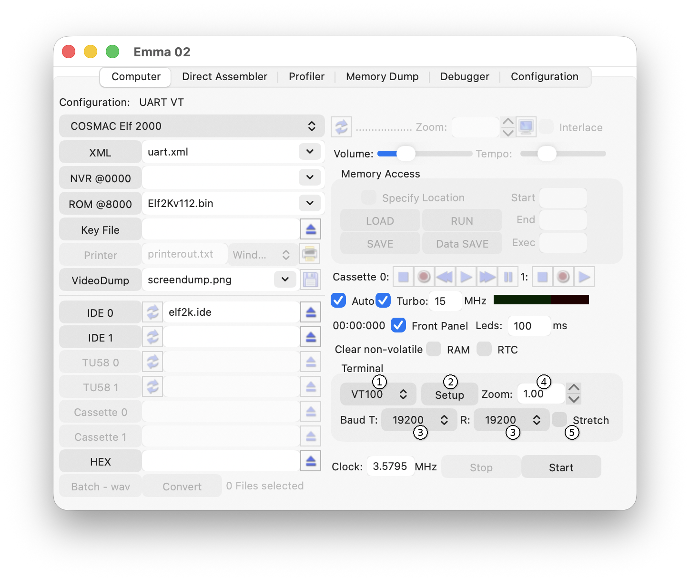
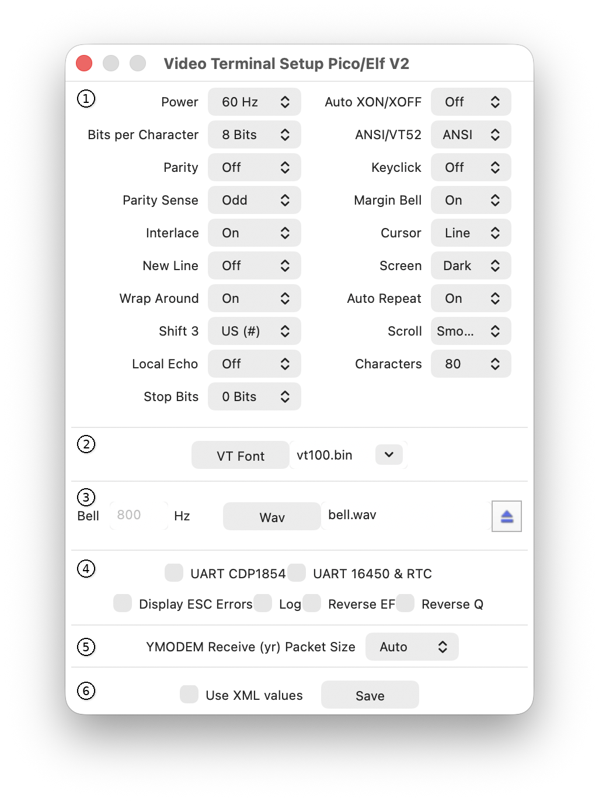

The main video terminal (VT) settings can be changed in the Terminal area shown below:

The VT type selector (1) sets the terminal type: none (no video terminal), VT52, VT100, External (external terminal software), or Loop (loopback). The Setup button (2) opens the detailed setup window described below. For serial terminals, both Baud rates (3) are always the same; therefore only the T (transmitter) button is enabled. For UART terminals, both T and R (receiver) buttons are enabled independently, allowing different baud rates per direction. The Zoom text field (4) controls the terminal zoom level; see the Zoom Level and Full Screen Mode section. The Stretch checkbox (5) enables stretched dot mode, where each 'on' dot in the font is repeated horizontally as on the original VT terminals.
The following subsections describe the terminal options available when selecting Setup (2) above.
The VT setup window controls are shown below:

The setup window above shows all possible specific settings for a VT100 terminal. These settings are VT specific, and will look slightly different for the VT52, External, and Loop options.
For both VT52 and VT100 terminals, most details about these settings can be found in the manuals on VT100.net.
Note: The Characters setting is only available on the VT100 and allows selection of 64, 80 or 130 column mode.
Use the VT Font button or file selector to select a new font file. Some font ROMs are included, but these are not 100% original.
For the VT52, there are two fonts: vt52.a.bin and vt52.b.bin; it is unclear which is more accurate; feedback on functionality or font ROMs is welcome.
A frequency for the bell sound can be selected (default 800 Hz), or alternatively a wav file can be specified.
If a wav file is specified, the sound contained in that file will be played when a bell is activated on the simulated VT.
The Cosmac Elf, Microboard System, MS2000, Netronics Elf, and Quest Super Elf support the UART CDP1854.
Note: Only simple mode '1' emulation for the UART CDP1854 is implemented.
Note: In UART CDP1854 mode, transmit (T) and receive (R) baud rates can be different.
The Cosmac Elf, Elf 2000, Pico/Elf V2, Netronics Elf and Quest Super Elf support the UART 16450.
Note: Only basic usage of the UART 16450 is implemented.
Note: In UART 16450 mode, transmit (T) and receive (R) baud rates can be different.
This mode uses serial I/O via the Q line and one of the EF lines.
To use this mode, make sure the UART 16450 and UART CDP1854 checkboxes are not selected.
In this mode the transmit and receive (T/R) baud rates are always the same.
When Display ESC errors is selected, ESC errors are shown on the video terminal simulator.
To log all VT terminal output to a file (terminal.log), select the Log checkbox.
If the file already exists, a new file with a sequence number is created each time the emulated computer window is started.
For example, terminal.log is used the first time, followed by terminal.1.log, etc.
To use the VT with reverse EF input, select the checkbox.
To use the VT with reverse Q output, select the checkbox.
When XMODEM is configured, the YMODEM receive packet size can be selected. By default, this is set to Auto, but it can be changed to 1024 or 128.
When Auto is used, Emma 02 sends packets of 1024 bytes when sufficient data is available. If less data is available, 128-byte packets are used.
For more details, see the HEX and XMODEM Support section.
If the checkbox Use XML values is selected, Emma 02 will fetch VT settings that are available from the XML file. All GUI items found in the XML file will be disabled. To change any value independently of what is specified in the XML file, deselect the checkbox.
Use Save to save the settings.